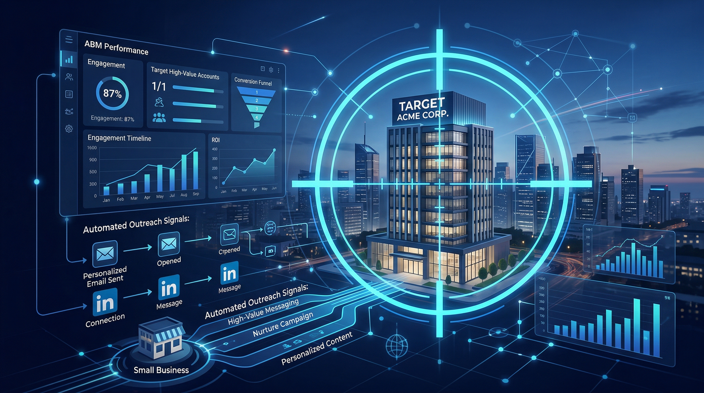

Key Takeaway: Account-based marketing is not about budget — it is about focus. Small B2B businesses that identify 20-50 high-fit target accounts and run personalised, multi-channel outreach consistently win larger deals, faster. AI agents make this level of personalisation achievable without a dedicated marketing team.
When most small business owners hear "account-based marketing," they picture the enterprise world: a team of SDRs, a Demandbase or 6sense subscription at $5,000 a month, coordinated multi-touch sequences across every digital channel simultaneously. It sounds complex, expensive, and frankly a bit exhausting.
Here is the thing: that picture is outdated and, more importantly, it has poisoned the well for small businesses that could benefit enormously from the core idea of ABM. The logic is simple. Instead of casting a wide net and hoping the right fish swim through, you identify the specific companies you want to win, learn everything about them, and make your outreach so relevant that ignoring you becomes harder than responding.
For a small B2B consulting firm, IT services company, or agency with fewer than 50 employees, this is not a radical departure — it is just systematising what the best founders already do intuitively when they are closing deals they care about.
What ABM Actually Means (and Why Enterprise Has Hogged It)
Account-based marketing is a B2B growth strategy where marketing and sales efforts are focused on a specific set of target accounts rather than on generating as many leads as possible from a broad audience. The core philosophy is: treat each target company as a market of one.
In practice, this means:
- Selecting accounts based on fit criteria (industry, company size, revenue, tech stack, signals of buying intent)
- Researching deeply — who are the decision makers, what are their pain points, what has changed at the company recently
- Creating personalised outreach that references their specific situation, not generic industry problems
- Surrounding them with relevant content across the channels they use (LinkedIn, email, retargeting ads)
- Tracking account-level engagement so you know when a company is warming up and when to escalate
Enterprise teams use platforms like 6sense or Demandbase to identify buying signals at scale and automate the orchestration. Small businesses cannot afford that stack. But they do not need it. What they need is a focused process and the right lightweight tools to execute it consistently.
Why Small B2B Businesses Are Naturally Suited for ABM
There is a paradox at the heart of SMB marketing: small businesses are told they need to "generate more leads" and "increase top-of-funnel volume," but the typical SMB founder does not need 500 leads a month. They need five great clients. Maybe ten.
That constraint is actually ABM's biggest advantage. When your target is small, you can afford to do it properly. You can spend two hours researching a single company before you send your first email. You can write a LinkedIn message that references the CEO's recent post. You can send a case study that maps precisely to a problem the prospect mentioned in an interview six months ago.
Enterprise teams have to automate this research because they are targeting 10,000 accounts. You are targeting 30. That means you can achieve a level of personalisation that no enterprise ABM platform can match — if you have a systematic process for doing it.
The other advantage small businesses have: they are often run by the founder, who has genuine domain expertise and a real perspective. That authenticity is harder to fake with programmatic enterprise content. Use it.
Step 1 — Build Your High-Value Target Account List
ABM starts with a list. Not a massive scraped list of thousands of companies — a considered, curated list of accounts that represent the best possible use of your attention.
For most SMBs, this breaks into two tiers:
Tier 1: Dream Accounts (20-50 companies)
These are your highest-priority targets. Winning any one of these would be genuinely transformative for your business. They fit your ideal customer profile precisely and probably represent a significant contract value. Every Tier 1 account deserves deep research and highly personalised outreach. You should know these companies almost as well as you know your current clients.
Tier 2: Strong Fits (100-300 companies)
These are companies that fit your ICP well but are not in your top tier — either because the timing is not right, the deal size is smaller, or you have less confidence about the fit. Tier 2 gets personalised outreach but with less manual research — think company-type personalisation rather than individual-specific personalisation.
To build this list, pull from multiple sources:
- LinkedIn Sales Navigator (filter by industry, company size, geography, job title of decision maker)
- Your existing network — connections who match your ICP but you have never properly pitched
- Competitors' customer lists, case studies, and testimonials
- Industry directories, association member lists, award shortlists
- Companies that have engaged with your content (LinkedIn post reactions, website visitors if you have tracking set up)
The most important filter is not size or industry — it is fit signals. Look for companies actively hiring for roles that signal pain (e.g., a firm hiring a "Head of Marketing" is probably still relying on founders for marketing today). Look for recent funding events, new product launches, leadership changes — these are buying triggers.
Step 2 — Research Each Account Before You Touch Them
This is where most SMB outreach falls apart. Founders build a list and immediately start sending emails. The emails are generic, the prospect can smell the template from a mile away, and the reply rate is 0.5%.
For Tier 1 accounts, invest 30-60 minutes of genuine research before you write a single word of outreach. What you are looking for:
- Pain signals: Job postings, recent LinkedIn posts from the CEO, company announcements that suggest a challenge you can solve
- Growth signals: New funding, market expansion, recent hires in your domain area
- Technology signals: What tools they are currently using (check job descriptions, their website source code, BuiltWith)
- Social proof adjacency: Do you have clients in the same industry? Do you have a case study that closely mirrors their situation?
- Decision maker profile: What does the key contact post about on LinkedIn? What are their stated priorities? What have they been publicly wrestling with?
Store this research in your CRM against each account. Every subsequent touchpoint should reference something from this research. The moment a prospect feels like you actually understand their situation, your conversion rate multiplies.
Step 3 — Personalised Outreach That Actually Gets Read
With research done, your outreach writes itself. The formula for a high-performing ABM cold email is:
- Opening line: One sentence that proves you did your homework. Reference something specific — a post they wrote, a challenge they mentioned, a recent company development.
- Pain bridge: Connect that observation to the specific problem you solve. Do not over-explain. Two sentences.
- Proof: One sentence of social proof — a relevant client, a specific result, a case study.
- Ask: A specific, low-friction call to action. Not "let's get on a call." Something like "Would it be worth a 15-minute conversation to see if we can replicate this for [Company]?"
Total length: under 120 words. The days of long cold emails are over. Busy decision makers on mobile skim or delete anything that looks like effort to read.
For LinkedIn outreach, the bar for personalisation is even higher. LinkedIn inboxes are flooded with copy-paste connection requests. A message that opens with a specific reference to something the person posted or said will stand out immediately. Keep it under 50 words. No pitch in the first message.
Your follow-up cadence for Tier 1 accounts:
- Day 1: Initial email
- Day 3: LinkedIn connection request (no message)
- Day 5: Follow-up email with a different angle — a case study, a relevant article, a new insight
- Day 8: LinkedIn message (after connection accepted)
- Day 14: Final email — break-up framing ("I don't want to keep emailing if timing is off — happy to reconnect when it makes sense")
This is not aggressive. It is persistent without being annoying. Most deals are won on follow-up 4 or 5. Most people stop after follow-up 1.
Step 4 — Creating Content Your Target Accounts Will See
ABM is not just outreach. It is also about being visible to your target accounts in the channels they inhabit, so that by the time your outreach arrives, they have already seen your name and your thinking.
For small businesses, this typically means:
LinkedIn publishing: Post 3-4 times per week with content that addresses the specific pain points of your target accounts. If you are targeting IT consulting firms, write about the challenges IT consulting firms face. Your target accounts will see this content if you are connected to the right people, if you use the right hashtags, or if the algorithm surfaces it to their network.
SEO blog content: Write posts targeting the exact keywords your target buyers are searching for. When a prospect Googles a problem they have and finds your well-written, expert answer, your authority in their mind increases before you have ever spoken.
Targeted content assets: For your top 20 Tier 1 accounts, consider creating a mini case study or insight document that is specific to their vertical. This can be referenced in your outreach ("I wrote this specifically for [industry] companies dealing with [problem] — happy to share") and becomes a powerful conversion tool.
Step 5 — Retargeting Target Accounts on a Tight Budget
One of the most powerful (and most overlooked) ABM tactics for small businesses is retargeting — serving ads specifically to the people at your target accounts who have visited your website or engaged with your content.
This does not require an enterprise budget. Here is how to do it for under $500 a month:
- Install the LinkedIn Insight Tag on your website. This lets you build retargeting audiences from your site visitors.
- Upload your target account email list to LinkedIn Matched Audiences. LinkedIn will match these emails to user profiles and let you serve ads to them.
- Set a small daily budget — even $10-20 per day is enough to stay visible to a small list of high-value accounts over a 30-day window.
- Run ads that deliver value — your best blog post, a relevant case study, a short insight video — not a direct pitch. You are warming them up, not closing them.
The result: when your cold email arrives, the prospect has already seen your brand on LinkedIn two or three times in the previous week. You are no longer a stranger. Familiarity converts.
Step 6 — Tracking Account Engagement and Knowing When to Push
ABM requires account-level tracking — not just contact-level. You need to know not just whether an individual clicked your email, but whether multiple people at the same company are engaging with your content, visiting your website, or responding to your outreach.
For a small business CRM, the minimum you need is:
- Account record with all associated contacts
- Log of every touchpoint — email sent, LinkedIn message, content viewed, ad clicked
- Account engagement score — a simple 1-10 rating based on recent activity
- Next action and owner for each account
- Stage: Identified → Researched → Outreach Active → Engaged → Meeting Booked → Proposal Sent → Won/Lost
An account showing multiple engagement signals in a short window — email opened twice, LinkedIn connection accepted, website visit — is telling you it is time to escalate. Move faster. Call if you have a number. Send a highly personalised video message. Offer a specific, concrete next step.
How AI Agents Make SMB ABM Scalable
The honest challenge with everything described above is time. Researching 50 accounts properly, writing personalised emails, managing multi-touch sequences across email and LinkedIn, publishing regular thought leadership content, and tracking all of it in a CRM — this is a full-time job. Most SMB founders simply do not have that time on top of actually running the business.
This is where AI agents change the game for small businesses. An autonomous AI marketing agent — the kind AgentGrow deploys for SMBs — can handle the execution layer of an ABM programme without a human touching each step:
- Account research: AI agents can crawl target company websites, LinkedIn profiles, news sources, and job postings to extract pain signals and growth triggers automatically
- Personalised email drafting: Using research data, an AI agent can draft highly personalised cold emails for each target account in seconds — maintaining a human tone without sounding like a template
- Sequence automation: Multi-touch follow-up sequences run on schedule without manual oversight. The AI logs every interaction back into the CRM automatically
- Content creation: Weekly blog posts, LinkedIn updates, and social media content targeting the exact pain points of your ICP — all produced and published by an agent that understands your positioning
- Engagement monitoring: The agent surfaces high-engagement accounts to the founder for human follow-up — so you only invest manual time where it is most likely to pay off
The result is an ABM programme that would cost $15,000 to $25,000 per month to run with a human team, running autonomously for a fraction of that cost. For SMBs targeting 20-50 accounts, this is not a luxury — it is the most efficient use of a limited marketing budget.
Ready to Run ABM Without a Full-Time Team?
AgentGrow deploys an autonomous AI agent that handles account research, personalised outreach, content creation, and CRM tracking — everything you need to run a real ABM programme without a dedicated hire.
Start Your Free 7-Day TrialThe Bottom Line
Account-based marketing is not an enterprise privilege. It is a strategic choice to be ruthlessly focused on the accounts that matter most to your business — and to invest in understanding and reaching those accounts in a way that generic lead generation never will.
Small B2B businesses that make this shift stop chasing volume and start pursuing the right companies, with the right message, at the right time. The result is not just more meetings. It is better meetings, with companies that are already warmed up, already familiar with your thinking, and already convinced that you understand their world.
The infrastructure to run this has never been more accessible. You do not need a $10,000-a-month platform. You need a clear target list, a disciplined research process, personalised multi-channel outreach, and a system that tracks it all. AI agents handle the execution. You stay focused on the relationships.
That is ABM for small business. And it works.